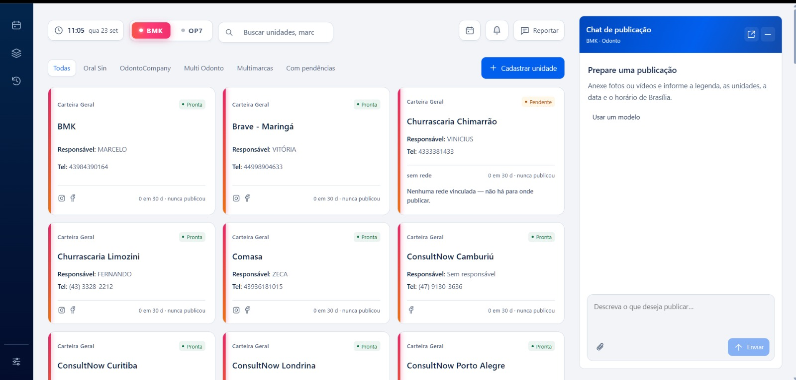

Confirmação humana
O agente interpreta datas, horários, redes e unidades, mas nunca publica sozinho. A lista final de destinos fica visível antes da confirmação.
Design & desenvolvimento
UI / UX
Uma publicação. O destino certo para cada unidade.
 Ampliar
Ampliar O AUTOPOST nasceu para uma operação com dezenas de marcas e mais de 80 unidades de clientes. A mesma campanha precisava chegar ao Instagram e ao Facebook corretos, sem depender de uma sequência manual sujeita a erro.
A equipe escreve o pedido em português, anexa a mídia, confere os destinos e confirma. A plataforma interpreta o agendamento, aplica a assinatura técnica de cada unidade e acompanha a publicação até o fim.
O agente interpreta datas, horários, redes e unidades, mas nunca publica sozinho. A lista final de destinos fica visível antes da confirmação.
Row Level Security no PostgreSQL separa os dados de cada operadora no próprio banco. Os destinos de publicação são vinculados ao cadastro da unidade, e a separação não depende apenas de validação no front-end.
A fila verifica a rede antes de reenviar, monitora falhas e conexões vencidas e oferece nova tentativa sem duplicar o post no feed.

Ampliar Ampliar
Ampliar A interface usa React, TypeScript, Vite e CSS sem framework, com teto de peso controlado no build. Chat com agente de IA, calendário com arrastar e soltar e fila de publicação fazem parte do mesmo fluxo de trabalho.
A Meta Graph API publica Reels, imagens e carrosséis no Instagram e no Facebook. Cada rede recebe sua própria legenda, com o link de WhatsApp onde ele é clicável. Nas clínicas, responsável técnico e registro profissional vêm do cadastro da unidade. Avisos sobre preço, promessas de resultado e antes e depois apoiam a revisão humana do conteúdo de saúde.
O back-end usa Node.js, Express, TypeScript e PostgreSQL com Row Level Security. Credenciais da Meta são criptografadas com AES-256-GCM e não voltam à tela. A fila acompanha falhas, atrasos e conexões vencendo, permite tentar novamente e apagar publicações em lote. Agendamentos usam o horário de Brasília, independentemente do fuso do servidor.
A infraestrutura roda em Oracle Cloud com Ubuntu, Caddy com HTTPS, systemd e backup diário. Cerca de 800 testes em Vitest cobrem unidades, integrações e isolamento entre clientes contra um banco real.
Meu papel atravessou o produto inteiro: concepção, design da interface e da experiência, desenvolvimento full-stack, banco de dados, integrações e deploy em produção.